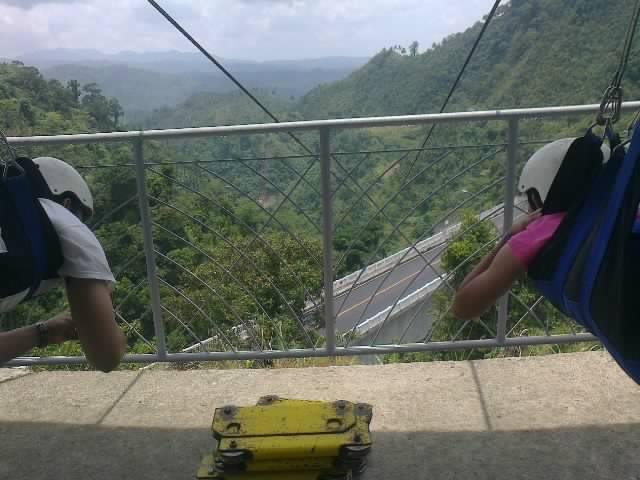

|
I stayed in Leyte the longest and there are many municipalities worth going to in this province. Leyte is abundant of different forms of water; lakes, falls, rivers,and beaches. It has islands, caves and mountains to enjoy.
One of the best destination is in Limasawa, Leyte. We've heard of this place so many times during our Civics class whenever the topic is about the arrival of Magellan in the Philippines.
It would take you a 4 to 5 hrs to get to this island from mainland, Tacloban. Three hours of van travel to Maasin and one or two hours travel via boat to the island of Limasawa. This island has a limit electricity supply so electricity would start at 5pm and ends at 5am. And everything is fresh and with no inorganic fertilizers.
|
|
Aside from Limasawa island, there is another island that has been noticed internationally, Kalanggaman Island.
It is a protected island by the Municipality of Palompon, and they are really reserving the beauty of the island. The amazing sandbar that stretches out from the main island is superb, especially as you walk through it. Th sand is so fine and white. At the back side of the island, is where the snorkling area is.
|
|
Leyte has both the longest and tallest bridge in the Philippines, these are San Juanico Bridge and Agas-Agas Bridge. San Juanico is very famous yet it seems like Agas-Agas bridge is not known to many Filipinos.

On 2012, Agas-Agas Bridge has a zipline and a cable car ride. While other zipline and cable car travel in a straight line, this one doesn't. The line is tilted downwards and the effect of it was a faster travel to the end. And, because I love adventure, I did it twice; first is with my dad and the second was with my mom.
However, when we passed by the bridge last 2015, the rides have been turned down.
|